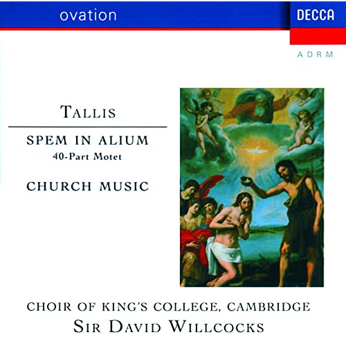
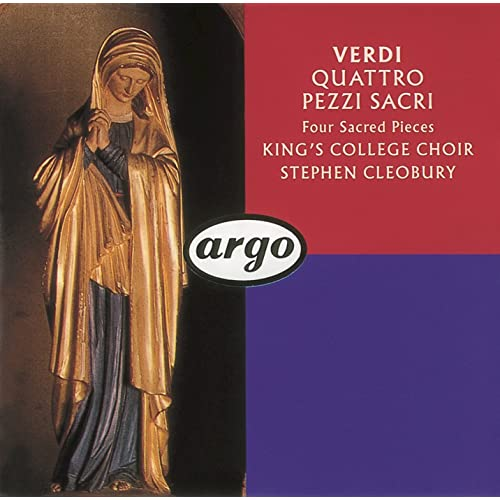

Campus Life
Dorm Rooms
Cambridge Dorm Rooms
Renowned. as one of the oldest and most beautiful of all the Cambridge Collages, Trinity Hall offers outstanding historic architecture, stunning grounds, gardens and riverside views. Ideally located in the centre of Cambridge, visitors to Trinity Hall have countless bars, restaurants, museums and historis attractions within a short walk away. The rooms are clean and comfortable and include overnight toiletries, a Fairwide hospitality tray with tea & coffee making facilities, use of bathrobes and slippers and WiFi access. The Single Traditional bedrooms have been shared bathroom facilities, with an average of four bedrooms sharing a bathroom.

Dining Hall
Cambridge Dining Hall
The bell Corpus can boast one of the most beautiful Dining Halls in Cambridge. The Hall is very much in the heart of the College; located between the New and Old Courts, serving meals to all Fellows, students and staff every day. The hall can accommodate lunch and dinner buffets, formal dinners and weddings receptions for up to 144 guests. The Dining Hall holds a licence for civil weddings and partnerships. The Dining Hall is new gothic in style and the walls are lined with portraits of previous Masters. The upper walls are wallpapered with design by Augustus Welby Northmore Pugin (1762 - 1832)
University Library
Cambridge University Library
Cambridge University Library is the main research library of the University of Cambridge. It is the largest of the over 100 libraries within the University. The Library is a major scholarly resource for the members of the University of Cambridge and external researchers.Visitors are welcome in the Milstein Exhibition Centre, which is open to the public. Details of the current exhibition can be found on our Exhibitions page. Visitors aged 16 or over are also admitted to the Library to view the building if accompanied by a current member of the University. As a Legal Deposit Library since 1710, Cambridge University Library has been entitled to claim a copy of every book published in the UK and Ireland for more than 300 years. Today, the University Library collections encompass around nine million books, manuscripts and other physical items.
Achivements
2nd best college by Academics and employers
Cambridge University is ranked "Second Best College for Academics and Employers. This fine College has enrollments to any kind of degrees you wish to have, such as filming, nursing, masters, As many as you wish. It has great rating of academic learning, and 2nd best school Employees in the world. There are six Schools, each of which constitutes an administrative grouping of Faculties and other institutions. They are: Arts and Humanities, Biological Sciences, Clinical Medicine, Humanities and Social Sciences, Physical Sciences, and Technology. There is a Council of each School – including representatives of its Faculties and Departments. The Schools are represented on the General Board.University Faculties organise teaching and research into individual subjects or groups of subjects. Their work is normally organised into sub-divisions called Departments.
Adam Smith Prize: awarded for best performance in the Part IIB Economics
The Adam Smith Award is the highest honor bestowed by The Association of Private Enterprise Education. It is given to recognize an individual who has made a sustained and lasting contribution to the perpetuation of the ideals of a free market economy as first laid out in Adam Smith's Wealth of Nations. The Faculty of Economics is one of the constituent departments of the University of Cambridge. It is composed of five research groups, in macroeconomics, microeconomic theory, economic history, econometrics, and empirical microeconomics. It is located in the Sidgwick Site in Cambridge, has been host to many distinguished economists, and is regarded as the birthplace of macro-economics. 19 students or members of the faculty have won the Nobel Memorial Prize in Economic Sciences. The Faculty of Economics was first created by Alfred Marshall in 1903, although the first notable Cambridge economist is considered to be Thomas Malthus. After Marshall, the faculty was home to Alfred Pigou, father of public economics, John Hicks, who pioneered the IS-LM model and general equilibrium theory, and John Maynard Keynes, father of modern macroeconomics. The faculty retained a strong Keynesian bend in its thinking well into the late 20th century. Today, the faculty offers one undergraduate course, the economics tripos, and five graduate programs: an advanced diploma in economics, master of philosophy degrees (MPhil) in economics, economic research, and finance and economics, and a PhD in economics. The undergraduate course is taught over the course of three years. In Part I, all students take the same five courses: microeconomics, macroeconomics, quantitative methods in economics, social and political aspects of economics, and British economic history. In the later two years, students continue to take courses in macro- and microeconomics with more freedom to choose additional courses, and all students write a thesis in their third year. Around the World, this medal is best known by the the study of Economics by Cambridge University.
Browne Medal: awarded for annual competitions in Latin and Greek poetry
The Browne Medals (also known as the Sir William Browne's Medals) are gold medals which since 1774 have been awarded for annual competitions in Latin and Greek poetry at the University of Cambridge. Sir William Browne, who had been president of the College of Physicians, died in 1774. His will left an endowment to the university: Sir William Browne having directed his executors to produce a die for annually striking of two medals of gold, of five guineas value each, to be sent to the vice-chancellor of Cambridge about the beginning of January, to be given by him, at the following commencement, to two undergraduates, one for the best Greek Ode in imitation of Sappho, the other for the best Latin ode in imitation of Horace, on a subject to be appointed by the Vice-Chancellor; also one other gold medal, of like value, to be given by him to the undergraduate who shall produce the best Greek epigram after the model of Anthologia, and the best Latin epigram after the model of Martial. The endowment, invested as a trust fund called the Browne Fund, is still used to encourage classical study at the university. The W. R. Browne Medal is awarded by the Geological Society of Australia "to a person distinguished for contributions to the geological sciences in Australia. The medal is named after William Rowan Browne.The Browne Medals (also known as the Sir William Browne's Medals) are gold medals which since 1774 have been awarded for annual competitions in Latin and Greek poetry at the University of Cambridge. Sir William Browne, who had been president of the College of Physicians, died in 1774.
Alumni
Issac Newton
No Great Discovery was ever made without a bold guess
Notable Alumni
Emma Thompson
Emma Thompson
![]()
Dame Emma Thompson (born 15 April 1959) is a British actress, screenwriter, producer, activist, author, and comedian. One of Britain's most acclaimed actresses, she is the recipient of numerous accolades, including two Academy Awards, two Golden Globe Awards, two British Academy Film Awards, a British Academy Television Award, and a Primetime Emmy Award.
Whant to Know More? Click Here
Albums
-
Choir of King’s College, Cambridge Tallis: Spem in Alium
' This is a chrous performed by Kings College and Cambrige. It is the Second most popular album by Cambridge University. This Album was performed in 1992.
-
Verdi: Four Sacred Pieces; Pater Noster
' This is an Album by Cambridge Univeristy. This is mainly a book about an ablum performed during 1990. This is Cambrige's most popular album. This ablum is about a sacred woman. ***Album by CUMS Chorus, Choir of King’s College, Cambridge, and Stephen Cleobury***